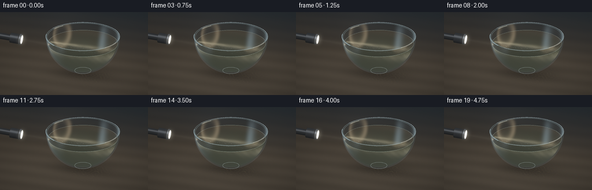
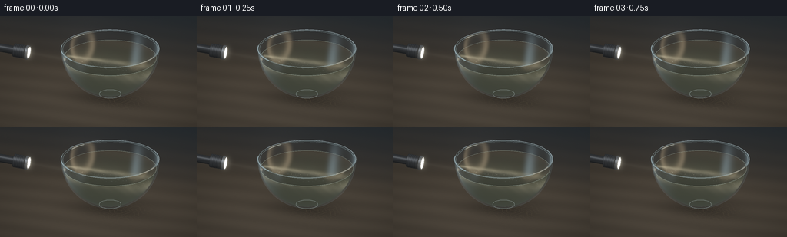
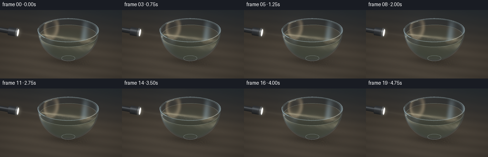
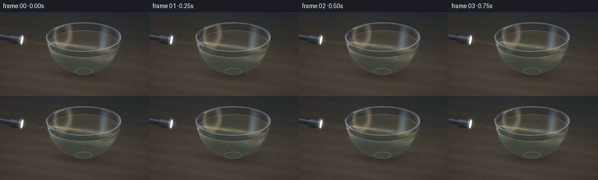

CODING AGENTS AS PIXEL WORLD MODELS
traex/GPT-6.1-Sol · phygen_047
点击播放 · 原生 RGB 像素
逐轮保存的候选
回放视频、检查图与代码变化。
每份候选均可单独播放。实际图片检查记录在下方工具轨迹中。
候选 01播放与检查图
点击播放 · 原生 RGB 像素


展开代码变化
--- 上一保存版本
+++ 本次保存版本
@@ -0,0 +1,352 @@
+"""Text-only optical study: analytic geometry, single-scattered light and particles.
+
+Run with Python; no assets, pretrained models or rendering engines are used.
+"""
+from pathlib import Path
+import json
+import numpy as np
+from PIL import Image, ImageDraw
+from scipy.ndimage import gaussian_filter
+import artifact_io
+
+ROOT = Path(__file__).resolve().parent
+SPEC = json.loads((ROOT / 'task_spec.json').read_text())
+S = 3
+W, H = SPEC['width'] * S, SPEC['height'] * S
+rng = np.random.default_rng(47019)
+
+def unit(v):
+ return v / np.linalg.norm(v, axis=-1, keepdims=True)
+
+eye = np.array([3.0, -8.0, 4.4])
+target = np.array([.30, .0, .92])
+D = unit(target - eye)
+R = unit(np.cross(D, [0., 0., 1.]))
+U = np.cross(R, D)
+view_width = 6.8
+pixel = view_width / W
+xx, yy = np.meshgrid((np.arange(W) + .5 - W/2)*pixel,
+ (H/2 - np.arange(H) - .5)*pixel)
+O = eye + xx[..., None]*R + yy[..., None]*U
+dirs = np.broadcast_to(D, O.shape)
+C = np.array([.68, .15, 1.75])
+OUTER, INNER, RIM, LEVEL = 1.70, 1.641, 1.75, 1.415
+nozzle = np.array([-2.23, -.01, 1.29])
+axis = unit(np.array([1., .038, -.067]))
+
+def sphere_interval(o, d, center, radius):
+ oc = o - center
+ b = np.sum(oc*d, axis=-1)
+ disc = b*b - np.sum(oc*oc, axis=-1) + radius*radius
+ q = np.sqrt(np.maximum(disc, 0.))
+ return -b-q, -b+q, disc >= 0
+
+def volume_interval(o, d, radius=INNER, top=LEVEL, bottom=.09):
+ a, b, valid = sphere_interval(o, d, C, radius)
+ dz = d[..., 2]
+ z1 = (bottom - o[..., 2])/np.where(abs(dz)>1e-8, dz, 1e-8)
+ z2 = (top - o[..., 2])/np.where(abs(dz)>1e-8, dz, 1e-8)
+ a = np.maximum(a, np.minimum(z1,z2))
+ b = np.minimum(b, np.maximum(z1,z2))
+ return a, b, valid & (b>a) & (b>0)
+
+def project(p):
+ v = p - target
+ return np.stack((W/2 + v@R/pixel, H/2 - v@U/pixel), axis=-1)
+
+def wood(p):
+ x,y = p[...,0],p[...,1]
+ grain = np.sin(57*y + 2*np.sin(x*2.7) + .5*np.sin(y*12))
+ grain += .43*np.sin(y*140 + np.sin(x*3.1)*3)
+ broad = .91 + .07*np.sin(y*5 + .3*np.sin(x)) + .035*grain
+ illumination = .18 + .17*np.exp(-((x-.3)**2/13 + (y+.3)**2/14))
+ shadow = 1 - .60*np.exp(-((x-.72)**2/2.15 + (y-.05)**2/1.0))
+ return broad[...,None] * illumination[...,None] * shadow[...,None] * np.array([.24,.19,.135])
+
+table_t = -O[...,2]/D[2]
+table_p = O + table_t[...,None]*D
+background = wood(table_p)
+# A distant, defocused tabletop disappears into a charcoal photographic backdrop.
+backblend = np.clip((table_p[...,1]-2.0)/5.5, 0, 1)
+back = np.array([.016,.021,.025]) + .009*np.exp(-((xx+.5)**2+(yy-.8)**2))[...,None]
+background = background*(1-backblend[...,None]) + back*backblend[...,None]
+background = gaussian_filter(background, sigma=(1.05,1.05,0))
+
+va, vb, vm = volume_interval(O, dirs)
+ids = np.where(vm)
+vo = O[ids]
+entry = vo + va[ids][:,None]*D
+norm = unit(entry-C)
+top_entry = abs(entry[:,2]-LEVEL)<.0001
+norm[top_entry] = [0,0,1]
+cosi = -norm@D
+eta = 1/1.333
+refract = eta*D + (eta*cosi-np.sqrt(1-eta*eta*(1-cosi*cosi)))[:,None]*norm
+water_o = entry + refract*.0001
+_, water_exit, _ = volume_interval(water_o, refract)
+water_exit = np.maximum(water_exit,0)
+water_exit_pos = water_o + water_exit[:,None]*refract
+dist_to_table = -water_exit_pos[:,2]/refract[:,2]
+transmitted_table = wood(water_exit_pos + dist_to_table[:,None]*refract)
+
+sa,sb,sm = volume_interval(O,dirs,OUTER,RIM,.035)
+outer_near,outer_far,outer_valid = sphere_interval(O,dirs,C,OUTER)
+pn = O + outer_near[...,None]*D
+pf = O + outer_far[...,None]*D
+use_near = (pn[...,2]<=RIM) & (pn[...,2]>=.035)
+surface = np.where(use_near[...,None],pn,pf)
+gn = unit(surface-C)
+facing = abs(np.sum(gn*D,axis=-1))
+fresnel = .035+.965*(1-facing)**4
+fresnel = np.where(sm,fresnel,0)
+# Reflections of an unseen tall window and a small warm practical light.
+ref = dirs - 2*np.sum(dirs*gn,axis=-1)[...,None]*gn
+coolstrip = np.exp(-((ref[...,0]+.74)/.15)**2 - ((ref[...,2]-.48)/.75)**2)
+warmstrip = np.exp(-((ref[...,0]-.87)/.065)**2-((ref[...,2]-.31)/.80)**2)
+upper = np.exp(-((ref[...,2]-.88)/.15)**2)*.17
+glass_reflection = (coolstrip[...,None]*np.array([.38,.54,.62]) +
+ warmstrip[...,None]*np.array([.61,.47,.29]) + upper[...,None]*np.array([.14,.18,.20]))
+glass_reflection *= (.18+fresnel[...,None]*1.8)*sm[...,None]
+
+def cylinder_hit(p, length, radius):
+ # Closed finite cylinder whose origin is its right/emitting end.
+ q = O - p
+ qa = q@axis
+ da = D@axis
+ qp = q - qa[...,None]*axis
+ dp = D-da*axis
+ aa = dp@dp
+ bb = np.sum(qp*dp,axis=-1)
+ cc = np.sum(qp*qp,axis=-1)-radius*radius
+ disc = bb*bb-aa*cc
+ root = np.sqrt(np.maximum(disc,0))
+ t = (-bb-root)/aa
+ pos = O+t[...,None]*D
+ axial = qa+t*da
+ valid = (disc>=0)&(axial>=-length)&(axial<=0)&(t>0)
+ normal = unit(pos-p-axial[...,None]*axis)
+ tc = -qa/da
+ pc = O+tc[...,None]*D
+ capvalid = (np.sum((pc-p)**2,axis=-1)<radius**2)&(tc>0)
+ cap = capvalid & ((~valid)|(tc<t))
+ t = np.where(cap,tc,t)
+ normal = np.where(cap[...,None],axis,normal)
+ return t, valid|capvalid, normal, np.where(cap,0,axial), cap
+
+torch_color = np.zeros_like(background)
+torch_depth = np.full((H,W),np.inf)
+torch_mask = np.zeros((H,W),bool)
+for end,length,radius,kind in [
+ (nozzle-axis*.32,1.70,.145,'grip'),
+ (nozzle-axis*.13,.40,.232,'head'),
+ (nozzle,.10,.248,'rim'),
+ (nozzle+axis*.001,.005,.204,'lens')]:
+ ht,hm,hn,axial,cap = cylinder_hit(end,length,radius)
+ choose = hm & (ht<torch_depth)
+ light = np.array([-.35,-.5,.78])
+ diffuse = np.maximum(0,hn@light)
+ halfvec = unit(light-D)
+ specular = np.maximum(0,hn@halfvec)**35
+ material = .014 + .030*diffuse + .15*specular
+ if kind=='grip':
+ q = O+ht[...,None]*D-end
+ angle = np.arctan2(q[...,2],q[...,1])
+ machining = .76+.24*(np.sin(axial*117+angle*8)*np.sin(axial*117-angle*8))
+ material *= machining
+ if kind=='head':
+ grooves = .46+.54*(.5+.5*np.cos(axial*105))**.25
+ material *= grooves
+ if kind=='rim':
+ material = .035+.072*diffuse+.30*specular
+ col = material[...,None]*np.array([.83,.92,1.02])
+ if kind=='lens':
+ q = O+ht[...,None]*D-end
+ rr = np.sqrt(np.sum(q*q,axis=-1))/.204
+ power = 2.2+7*np.exp(-(rr/.39)**2)
+ col = power[...,None]*np.array([1.,.93,.75])
+ torch_color[choose]=col[choose]
+ torch_depth[choose]=ht[choose]
+ torch_mask |= choose
+
+# Suspended particles, in world coordinates, remain coherent throughout the shot.
+pts = rng.uniform([-1.55,-1.52,.15],[1.55,1.52,LEVEL-.02],(6500,3))
+pts += np.array([C[0],C[1],0.])
+pts = pts[np.sum((pts-C)**2,axis=1)<(INNER-.015)**2]
+particle_size = rng.uniform(.12,.43,len(pts))*S
+particle_albedo = rng.uniform(.3,1,len(pts))
+particle_phase = rng.uniform(0,2*np.pi,len(pts))
+texture_seed = rng.normal(0,1,(H,W))
+
+def beam_properties(p, time, water=True):
+ # A very small aiming movement, not a flashing or flickering source.
+ a = unit(axis + np.array([0,.009*np.sin(time*.8),.009*np.sin(time*.65)]))
+ delta = p-nozzle
+ s = delta@a
+ off = delta-s[...,None]*a
+ dist = np.linalg.norm(off,axis=-1)
+ if water:
+ traveled = np.maximum(s-1.30,0)
+ width = .084+.062*traveled
+ envelope = np.exp(-2.1*(dist/width)**2)
+ power = np.exp(-.41*traveled)*(.084/width)**.7
+ # A much fainter outer penumbra makes the lit suspended sediment legible.
+ halo = .058*np.exp(-1.4*(dist/(width*2.8))**2)
+ return (envelope+halo)*power*(s>0), s, off
+ width = .058 + .033*np.maximum(s,0)
+ return np.exp(-2*(dist/width)**2)*(s>0),s,off
+
+def murk(p,t):
+ x,y,z=p[:,0],p[:,1],p[:,2]
+ x=x+.020*t; y=y-.015*t
+ smooth = np.sin(x*7.5+np.sin(y*4.7)+z*4.9)*np.sin(y*8.1-z*5.4)
+ fine = np.sin(x*24+y*14+np.sin(z*15))*np.sin(z*20-y*23)
+ return np.clip(.83+.21*smooth+.11*fine,.44,1.24)
+
+def draw_curves(image,time):
+ layer = Image.new('RGB',(W,H))
+ dr = ImageDraw.Draw(layer)
+ def curve(points,color,width):
+ points=project(np.asarray(points))
+ dr.line([tuple(x) for x in points],fill=color,width=width,joint='curve')
+ theta=np.linspace(0,2*np.pi,550)
+ # Thick rolled glass lip, with separately readable back and front arcs.
+ for radius,z in [(OUTER,RIM),(INNER,RIM-.010),(1.687,RIM+.017)]:
+ pp=C+np.stack([radius*np.cos(theta),radius*np.sin(theta),np.full_like(theta,z-C[2])],-1)
+ curve(pp,(21,29,30),max(1,int(S*.8)))
+ # Narrow broken specular highlights are preferable to a white cartoon outline.
+ for start,end,r,z,col,w in [
+ (.12,2.85,1.696,RIM+.015,(75,96,104),2),
+ (3.3,4.15,1.697,RIM+.006,(71,100,110),3),
+ (4.38,5.72,1.69,RIM-.005,(51,65,65),2),
+ (2.48,2.82,1.651,RIM-.021,(107,117,103),2),
+ (5.68,6.16,1.696,RIM+.012,(95,85,65),2)]:
+ th=np.linspace(start,end,90)
+ pp=C+np.stack([r*np.cos(th),r*np.sin(th),np.full_like(th,z-C[2])],-1)
+ curve(pp,col,w)
+ # A subtle meniscus below the rim, visibly leaving the bowl open above it.
+ wr=np.sqrt(INNER**2-(LEVEL-C[2])**2)
+ for start,end,col in [(0,np.pi,(27,34,28)),(np.pi,2*np.pi,(34,44,37))]:
+ th=np.linspace(start,end,180)
+ wiggle=.002*np.sin(th*11+time*.9)
+ pp=C+np.stack([wr*np.cos(th),wr*np.sin(th),LEVEL-C[2]+wiggle],-1)
+ curve(pp,col,2)
+ # Small, thick glass foot resting on the dark wood.
+ th=np.linspace(0,2*np.pi,150)
+ pp=np.stack([C[0]+.38*np.cos(th),C[1]+.38*np.sin(th),np.full_like(th,.065)],-1)
+ curve(pp,(29,36,34),2)
+ return np.asarray(layer).astype(float)/255
+
+def render(time):
+ im=background.copy()
+ # Gentle blurred caustic pool on the tabletop, underneath the receiving side.
+ tx,ty=table_p[...,0],table_p[...,1]
+ env=np.exp(-((tx-1.13)**2/.95+(ty+.12)**2/.54))
+ warped=17*ty+3*np.sin(tx*7+time*.27)+np.sin(ty*12-time*.18)
+ ridges=np.exp(-((np.sin(warped))/.16)**2)
+ warped2=20*tx+2*np.sin(ty*9-time*.23)
+ ridges+=.47*np.exp(-(np.sin(warped2)/.18)**2)
+ im+= (env*ridges*.026)[...,None]*np.array([1.,.76,.39])
+
+ # Ray-marched single scattering in the finite bowl of turbid water.
+ steps=70
+ ds=water_exit/steps
+ trans=np.ones(len(entry))
+ scattered=np.zeros((len(entry),3))
+ for k in range(steps):
+ p=water_o+refract*(ds*(k+.5))[:,None]
+ den=murk(p,time)
+ light,s,off=beam_properties(p,time)
+ # Continuous, slowly evolving density variations break the shaft into
+ # delicate luminous layers without introducing unphysical strobing.
+ structure=1+.16*np.sin(p[:,0]*19+p[:,2]*27+np.sin(p[:,1]*15-time*.12))
+ extinction=den*.87
+ dt=np.exp(-extinction*ds)
+ hue=np.clip(off[:,2]/.24,-1,1)
+ beamcolor=np.stack([3.6+.16*hue,3.13+.10*hue,2.05-.18*hue],-1)
+ ambient=np.array([.046,.052,.034])
+ source=ambient+light[:,None]*structure[:,None]*beamcolor
+ scattered+=trans[:,None]*(1-dt)[:,None]*source
+ trans*=dt
+ im[ids]=scattered+trans[:,None]*transmitted_table
+ # Water surface reflection, low enough to preserve view into the fluid.
+ f=.021+.979*(1-np.clip(cosi,0,1))**5
+ top_reflect=np.zeros_like(scattered)+np.array([.026,.037,.038])
+ im[ids]=im[ids]*(1-f[:,None]*.30)+top_reflect*f[:,None]*.30
+
+ # Thin transparent bowl sides and reflective rolled rim.
+ im[sm]*=np.array([.955,.985,.984])
+ im+=glass_reflection
+ im+=fresnel[...,None]*np.array([.032,.044,.047])
+
+ # Air is almost clear: the incident shaft is only just visible before entry.
+ pa,pb,pvalid=sphere_interval(O,dirs,nozzle+axis*.60,.78)
+ airids=np.where(pvalid)
+ ao=O[airids]
+ astep=np.maximum(pb[airids]-pa[airids],0)/24
+ airs=np.zeros(len(ao))
+ for k in range(24):
+ pos=ao+D*(pa[airids]+astep*(k+.5))[:,None]
+ lit,s,_=beam_properties(pos,time,False)
+ outside=np.sum((pos-C)**2,axis=-1)>OUTER**2
+ airs+=lit*outside*(s<1.28)*astep*.064
+ im[airids]+=airs[:,None]*np.array([1.35,1.24,.93])
+
+ # Bright interface glint at the incidence point on the left wall.
+ inc=nozzle+axis*1.29
+ uv=project(inc)
+ gx=(np.arange(W)[None,:]-uv[0])/S
+ gy=(np.arange(H)[:,None]-uv[1])/S
+ glint=np.exp(-(gx*gx/1.8+gy*gy/3.1))*.29
+ im+=glint[...,None]*np.array([1.,.88,.62])
+
+ # Microscopic suspended sediment drifts and rotates very slowly.
+ p=pts.copy()
+ p[:,0]+=.016*np.sin(particle_phase+time*.54)+.006*time
+ p[:,1]+=.018*np.cos(particle_phase+time*.46)
+ p[:,2]+=.012*np.sin(particle_phase+time*.38)-.003*time
+ uv=project(p)
+ lit,_,off=beam_properties(p,time)
+ path=(p-entry.mean(0))@D
+ # Actual distance between each grain and the camera-facing water boundary.
+ _,to_front,_=volume_interval(p,np.broadcast_to(-D,p.shape))
+ atten=np.exp(-.85*np.maximum(to_front,0))
+ bright=(lit*1.05+.002)*particle_albedo*atten
+ specks=np.zeros_like(im)
+ for i in np.flatnonzero(bright>.006):
+ px,py=uv[i]
+ ix,iy=int(px),int(py)
+ rad=particle_size[i]
+ rr=max(2,int(rad*3))
+ x0,x1=max(0,ix-rr),min(W,ix+rr+1)
+ y0,y1=max(0,iy-rr),min(H,iy+rr+1)
+ if x1<=x0 or y1<=y0: continue
+ sx=np.arange(x0,x1)-px
+ sy=np.arange(y0,y1)-py
+ kernel=np.exp(-((sx[None,:]/rad)**2+(sy[:,None]/rad)**2)*.9)
+ col=np.array([1.,.91,.64]) if off[i,2]>.0 else np.array([.77,.91,.87])
+ specks[y0:y1,x0:x1]+=kernel[...,None]*col*bright[i]
+ im+=specks*vm[...,None]
+ im+=draw_curves(im,time)
+ im[torch_mask]=torch_color[torch_mask]
+
+ # Lens bloom is spatially restrained: the bowl still has readable contours.
+ bright=np.maximum(im-.39,0)
+ glow=gaussian_filter(bright,sigma=(2.8,2.8,0))*.20
+ glow+=gaussian_filter(bright,sigma=(11,11,0))*.09
+ im+=glow
+ vignette=np.clip(1-.12*((xx/3.7)**2+(yy/2.4)**2),.69,1)
+ im*=vignette[...,None]
+ # Filmic highlight shoulder plus display transfer, warm beam/cool glass.
+ im=im/(1+.46*im)
+ im=np.clip(im,0,1)**(1/2.2)
+ im+=texture_seed[...,None]*.0012
+ im=np.uint8(np.clip(im*255,0,255))
+ return np.asarray(Image.fromarray(im).resize((SPEC['width'],SPEC['height']),Image.Resampling.LANCZOS))
+
+if __name__=='__main__':
+ frames=[]
+ for frame in range(SPEC['frames']):
+ frames.append(render(frame/SPEC['fps']))
+ print(f'rendered {frame+1}/{SPEC["frames"]}',flush=True)
+ artifact_io.save(np.stack(frames).astype(np.uint8),ROOT)
+ print('Saved RGB frames, pixels.npz, and index.html.',flush=True)
候选 02播放与检查图
点击播放 · 原生 RGB 像素


展开代码变化
--- 上一保存版本
+++ 本次保存版本
@@ -179,7 +179,7 @@
def beam_properties(p, time, water=True):
# A very small aiming movement, not a flashing or flickering source.
- a = unit(axis + np.array([0,.009*np.sin(time*.8),.009*np.sin(time*.65)]))
+ a = unit(axis + np.array([0,.025*np.sin(time*.8),.021*np.sin(time*.65)]))
delta = p-nozzle
s = delta@a
off = delta-s[...,None]*a
@@ -197,7 +197,7 @@
def murk(p,t):
x,y,z=p[:,0],p[:,1],p[:,2]
- x=x+.020*t; y=y-.015*t
+ x=x+.043*t; y=y-.028*t
smooth = np.sin(x*7.5+np.sin(y*4.7)+z*4.9)*np.sin(y*8.1-z*5.4)
fine = np.sin(x*24+y*14+np.sin(z*15))*np.sin(z*20-y*23)
return np.clip(.83+.21*smooth+.11*fine,.44,1.24)
@@ -301,9 +301,9 @@
# Microscopic suspended sediment drifts and rotates very slowly.
p=pts.copy()
- p[:,0]+=.016*np.sin(particle_phase+time*.54)+.006*time
- p[:,1]+=.018*np.cos(particle_phase+time*.46)
- p[:,2]+=.012*np.sin(particle_phase+time*.38)-.003*time
+ p[:,0]+=.036*np.sin(particle_phase+time*.54)+.016*time
+ p[:,1]+=.039*np.cos(particle_phase+time*.46)
+ p[:,2]+=.024*np.sin(particle_phase+time*.38)-.005*time
uv=project(p)
lit,_,off=beam_properties(p,time)
path=(p-entry.mean(0))@D
可观测工具轨迹
实际执行的命令与返回图片。
命令 1exit 0
/bin/bash -lc "ls -la && cat prompt.txt && printf '\\n---RULES---\\n' && cat GENERATION_RULES.md && printf '\\n---SPEC---\\n' && cat task_spec.json"
命令 2exit 0
/bin/bash -lc "cat artifact_io.py && python - <<'PY' import importlib.util for x in ['numpy','PIL','scipy']: print(x, bool(importlib.util.find_spec(x))) PY"
命令 3exit 1
/bin/bash -lc 'python generate.py'
命令 4exit 0
/bin/bash -lc 'OPENBLAS_NUM_THREADS=1 python generate.py'
命令 5exit 0
/bin/bash -lc "python - <<'PY'
from pathlib import Path
import numpy as np
from PIL import Image
p=Path('.')
a=np.stack([np.asarray(Image.open(p/'frames'/f'{i:02d}.png')) for i in range(20)])
print('Frames:',a.shape,a.dtype)
print('Range:', a.min(),a.max())
print('Mean temporal pixel difference:',np.abs(np.diff(a.astype(float),axis=0)).mean())
print('Required artifacts:', all((p/x).exists() for x in ['generate.py','pixels.npz','index.html','inspection.png','transition_check.png']))
print('Packed tensor:',np.load('pixels.npz')['pixels'].shape)
PY
command -v ffmpeg || true"命令 6exit 0
/bin/bash -lc 'OPENBLAS_NUM_THREADS=1 python generate.py'
命令 7exit 0
/bin/bash -lc "python - <<'PY'
import numpy as np
from pathlib import Path
from PIL import Image
p=np.load('pixels.npz')['pixels']
assert p.shape == (144,256,20)
assert len(list(Path('frames').glob('*.png')))==20
assert all(Image.open(f'frames/{i:02d}.png').mode=='RGB' for i in range(20))
print('Verified: 20 RGB frames, 256Ã144; all output artifacts saved.')
PY"保存候选 2 份；完成命令 7 次；可验证图片返回 0 张。原始 API 响应与完整日志保留在本地。